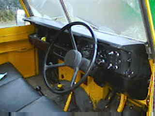
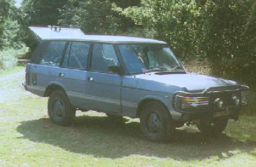

Jessica the Land-Rover

Jessica the Land-Rover |
|
Jessica the Land-Rover, TDL 973X, is a 1980 ex-Royal Air Force series III
Land-Rover.
She is bright yellow because she was painted this colour by the RAF, to prevent aeroplanes
from landing on her. It obviously worked because none ever did.
Even her bumper was yellow when I bought her, immediately after she was discharged from service. Further investigation showed that the yellow had been sprayed all over her body, even underneath, without removing anything - even the dirt. So much of it came off, and I was forever patching it up at first. The yellow came off the bumper in about a week.
Jessica has a full soft-top tilt which has an unusual window panel in the roof. This, apparently, is just in case the warning colouration fails and an aeroplane insists on landing on you. You would be able to see the aeroplane and drive away before it lands. Luckily I never had to test this admittedly useful feature.
|  | The interior of Jessica. Shows the Fairey (=Superwinch) Overdrive lever, with black top (up against the seat). The yellow topped-lever, if you can make it out, is the 4-wheel drive, and the red one, which is hard to see in this picture, is the high/low ratio selector. There is also a normal gearstick and a handbrake somewhere in the middle. Sitting on the bench seat is not recommended unless you are very good friends with the driver! |
Jessica was in 1995 used as the get-away car for the weddings of Ruth and Paul D'Alessandro; and David Glasspool and Heather Rhodes.
She is named after Jessica Rabbit, because of her habit of vibrating vigorously.
Jessica was used regularly for driving around the Fens, where I lived at the time. From time to time she got her tyres muddy, and was used for crossing the muddy fields and tracks of Wicken Fen NNR, where I worked.
In February 1996, amidst open weeping, Jessica was sold to Ian Wallis, Property Manager at Blickling Hall, Aylesham, Norfolk because we needed the money, amongst other reasons. So ended a beautiful love story between Matt and a marvelous machine. It didn't take me long to buy another one - see below. In the meantime there was the pain and humiliation of driving around in a blue Vauxhall Nova called Lewis.
What has happened to Jessica since: Ian has done several things we couldn't afford. He has had a new tilt made up, yes, with the special window in the roof! He has replaced the old seats with nice new ones, and put proper inertia belts in. He has also fitted a roll bar. Changing the quaint old character of the vehicle? Maybe, but by God I'd have done the same if I had the money - especially after driving 200 miles in it all those things seem like a really, really good idea. That and an upgraded heater. I haven't heard from Ian for many years now so I really don't know where Jessica now is or what she's doing. If you see her, do let me know.
In May 1997 Lewis was replaced and Jessica was suitably succeeded by B770 MDG, a massive and wonderful Range Rover. No snappy name. Eventually, in 1998 it rusted away beyond the power of Hamerite and I sold that too for a pittance, having poured our life savings into it. It was great whilst it lasted.

My Range Rover in the Forest of Dean; August 1997
Fame: a big picture of this page appeared in the Summer 1996 edition of Land Rover Owner International magazine, along with the following text:
There's nowt so queer as Land-Rover folk - take a look at 'Matt and Bab's' pages about their bright yellow ex-RAF series III called Jessica...
Well, now I haven't got a vehicle from Solihull at all, as all my money is spent on children and food and things. It's a very poor state of affairs. Pretty soon now I imagine fondly I'll be buying another Land-Rover and when I do, you can come back here and see pictures of it. I might say that I've been saying this for nearly 8 years now, and never have. So don't hold your breath.
Am I cool, or what? You think so? Well then tell me about it.
Series123.com - where I was featured in July 2002
I like you to tell me what you think.
Yes!! I want to let you know what I thought of
your laughable efforts
No, I
couldn't care less.